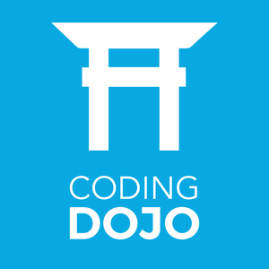

Hello! My name is Sushma and I am a software developer. I am from the San Francisco Bay Area. I recently graduated from SCU with a degree in computer science, and I just completed a training from Coding Dojo, where I learned three full-stacks, which are Django (Python), MEAN, and Spring (Java) MVC stacks. I am interested in building web applications and front-end aspects. I am a highly motivated team player with a strong passion for learning new technologies.
Skills
HTML5/CSS3
Vanilla JavaScript
AngularJS
Django
Flask
Python
MEAN
MongoDB
Express.js
Node.js
Spring MVC
Java
Materialize CSS
Zurb Foundation
Twitter Bootstrap
jQuery
JSON
PHP
MySQL and LAMP Stack
Wordpress and Content Management System
Ruby and Ruby on Rails
C/C++, Python and Java
Education
Santa Clara University

Bachelor of Science in Computer Science
Minor in Mathematics
Relevant Courses:
Intro to Web Technologies, Web Programming I & II, Advanced Programming, Abstract Data Types & Data Structures, Programming Languages, Database Systems.
Coding Dojo Silicon Valley

Certification in Django (Python), MEAN, and Spring (JAVA) MVC